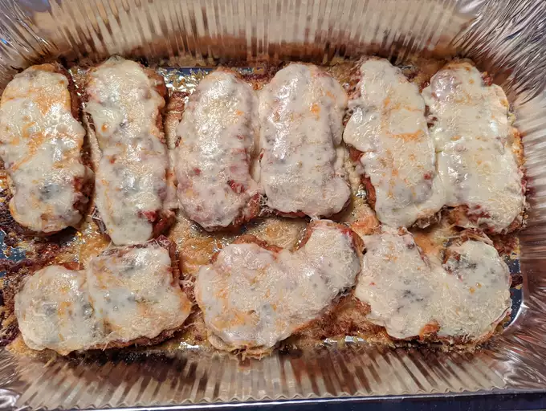

Chicken Parmesan

Description
Chicken Parmesan is no doubt the most popular non-pasta dish in
Italian-American style restaurants. And while this delicious meal
may seem fancy, it's actually pretty easy to make at home. In fact,
chicken Parmesan is one of those meals that's often best made in
your own kitchen. The main problem I have with most versions of
Chicken Parmesan served in restaurants is that they drown the
chicken in so much sauce and cheese that it ends up being a big
soggy clump of chicken and cheese. But it doesn't have to be that
way, not with this method.
Ingredients
- 4 skinless, boneless chicken breast halves
- salt and freshly ground black pepper to taste
- 2 large eggs
- 1 cup panko bread crumbs, or more as needed
- ¾ cup grated Parmesan cheese, divided
- 2 tablespoons all-purpose flour, or more if needed
- ½ cup olive oil for frying, or as needed
- ½ cup prepared tomato sauce
- ¼ cup fresh mozzarella, cut into small cubes
- ¼ cup chopped fresh basil
- ½ cup grated provolone cheese
- 2 teaspoons olive oil
Steps
- Pound chicken to an even thickness
- Don't skimp on seasoning
- Add Parmesan to the bread crumbs
- Rest before cooking
- Go easy on the sauce
- Make sure your oven is hot, hot, hot